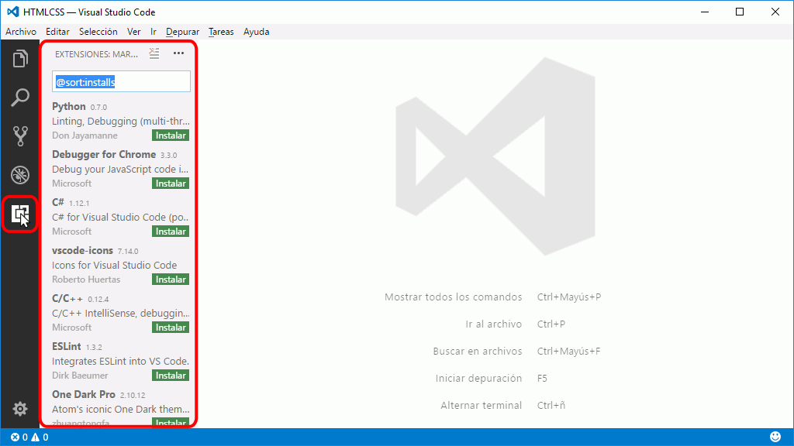
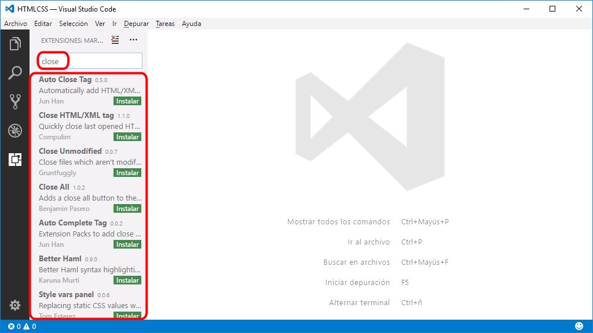
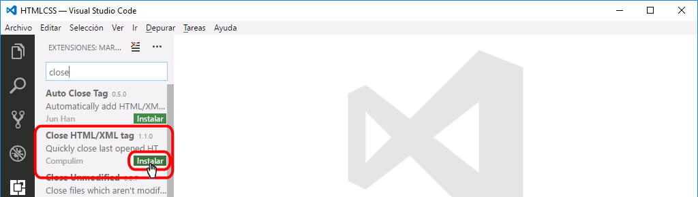
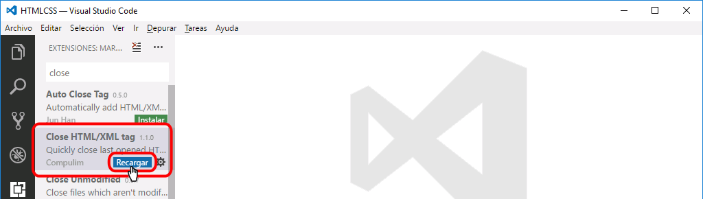
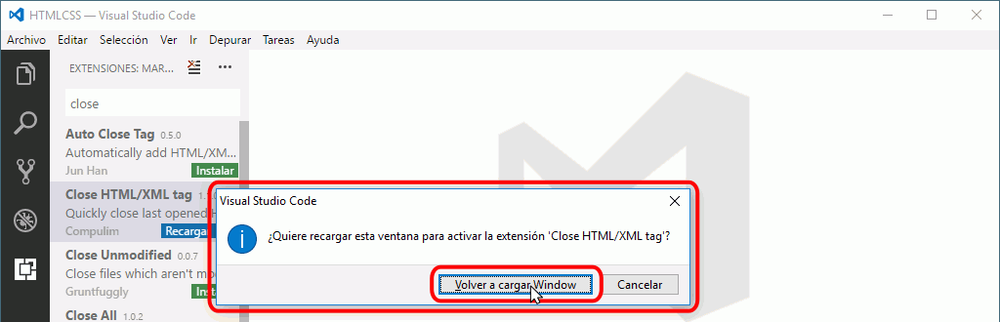
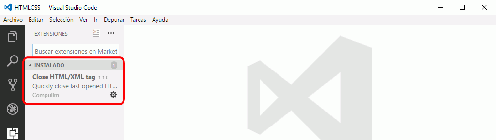

Las extensiones de Visual Studio Code permiten ampliar las características del editor. Las extensiones están disponibles en la web Visual Studio Code Marketplace. En esta web se pueden buscar extensiones y consultar detalles de las extensiones (características, número de instalaciones, precio, comentarios y valoraciones de los usuarios, ayuda disponible, etc.), aunque la instalación se realiza desde el propio Visual Studio Code.
Para instalar extensiones en Visual Studio Code, haga clic en el icono de Extensiones de la barra lateral. Se desplegará la barra lateral mostrando las extensiones disponibles, ordenadas por popularidad:

Escribiendo un término o varios en la caja de texto de búsqueda, se filtrarán las extensiones y se mostrarán las extensiones relacionadas.

Para instalar una extensión, haga clic en el botón Instalar correspondiente.

Tras unos segundos, se descargará e instalará la extensión. Haga clic en el botón Recargar para activar la extensión.

Se mostrará una ventana de confirmación. Haga clic en Volver a cargar la ventana para recargarla.

Tras reiniciarse, Visual Studio Code mostrará la extensión en la lista de extensiones instaladas.

Estas son las extensiones que se aconseja instalar para seguir el curso de Páginas web HTML y hojas de estilo CSS de mclibre.org.
Al situar el cursor sobre la ruta de una imagen, se muestra un cuadro con una miniatura de la imagen y el tamaño de la imagen. Además, haciendo
Cuando se escribe una ruta relativa (en un enlace, en una imagen, etc), al escribir una barra (/), se muestra un selector con los archivos y directorios disponibles. Al seleccionar uno de ellos, el nombre se añade a la ruta.
Al pulsar el atajo de teclado Alt+Shift+., se añade automáticamente la etiqueta de cierre de la etiqueta abierta anterior.
Notas: